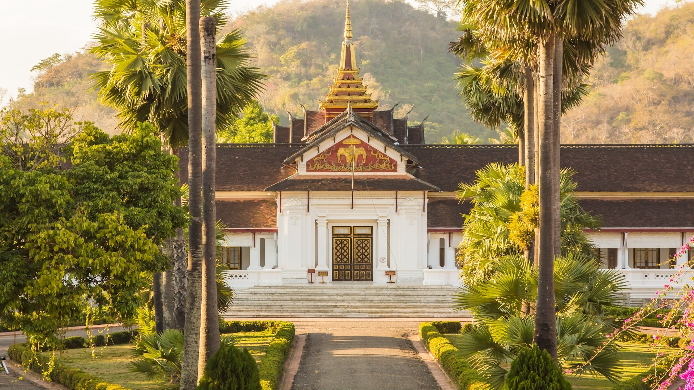
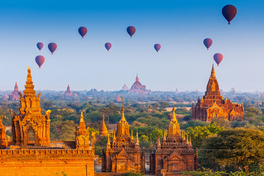
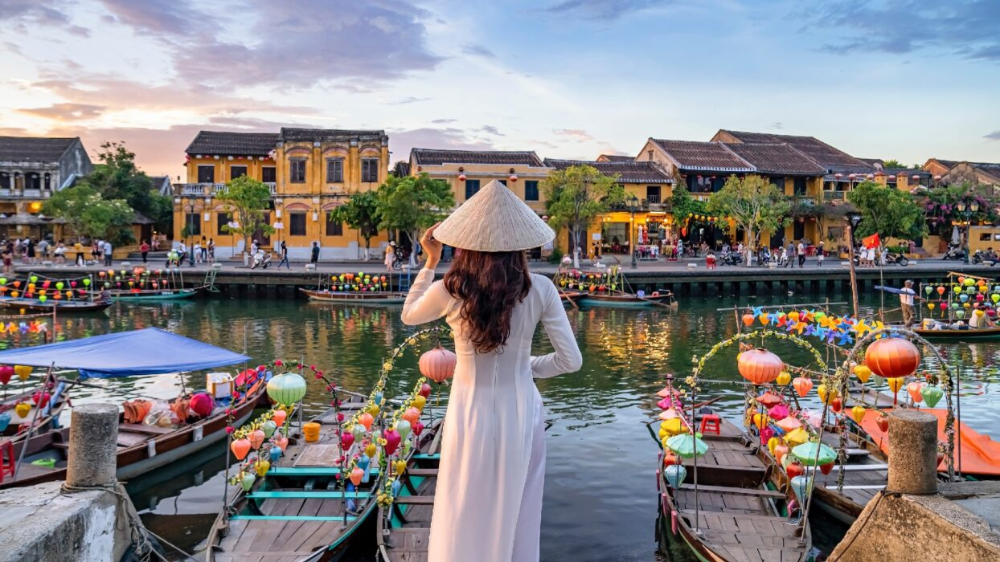

Southeast Asia is known for its popular destinations like Bali, Bangkok, and Singapore. However, beyond these well-trodden paths lie incredible hidden gems waiting to be discovered. Let's explore 10 of the most fascinating lesser-known destinations in this vibrant region.
1. Luang Prabang, Laos
Nestled between the Mekong and Nam Khan rivers, this UNESCO World Heritage site offers a perfect blend of French colonial architecture and traditional Lao culture. Don't miss the morning alms-giving ceremony and the stunning Kuang Si waterfalls.
2. Bagan, Myanmar
Home to over 2,000 ancient Buddhist temples, Bagan offers a magical experience, especially during sunrise when hot air balloons dot the sky. The archaeological zone is best explored by bicycle or e-bike.
Travel Tips for Hidden Gems
- Visit during shoulder seasons to avoid crowds
- Learn basic local phrases
- Respect local customs and traditions
- Book accommodations in advance
- Carry local currency
3. Hoi An, Vietnam
This charming ancient town is famous for its well-preserved architecture, colorful lanterns, and excellent cuisine. Take a cooking class or get custom-made clothing from the local tailors.
Continue reading to discover more hidden gems including:
- Koh Rong, Cambodia
- Bromo Tengger Semeru National Park, Indonesia
- Pai, Thailand
- And more...
Why Visit Hidden Gems?
These lesser-known destinations offer:
- More authentic cultural experiences
- Lower prices and fewer tourists
- Unique photo opportunities
- Chance to support local communities